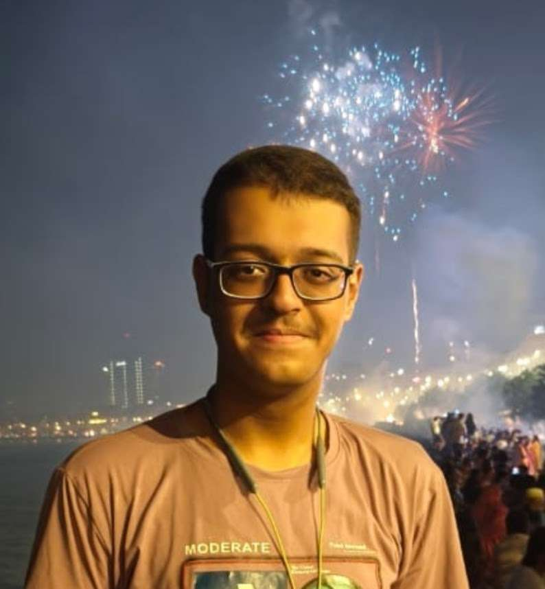

Hello, I'm
I am a passionate engineering student with a growing interest in cybersecurity, networking, and software development. Throughout my academic journey, I have developed a practical approach to learning by applying classroom concepts through projects, technical presentations, laboratory work, and online certifications. Every challenge has strengthened both my technical knowledge and my confidence to solve real-world problems.
"To dream bigger than what I'm capable of, until I make the dream a reality."
My name is Jahaan Bhatia, and I am currently pursuing a B.Tech in Cybersecurity at Shah and Anchor Kutchhi Engineering College. My interest in technology began with understanding how computers communicate and how digital systems can be secured against modern threats. As I progressed through engineering, that curiosity grew into a genuine passion for networking, cybersecurity and software development. Throughout my academic journey, I have participated in laboratory work, technical presentations, networking exercises and engineering projects that strengthened both my technical knowledge and my ability to work effectively in teams. Every semester has introduced new concepts that challenge me to think analytically while constantly improving my practical skills. My objective is to continue learning, build meaningful projects, explore emerging technologies and eventually contribute towards creating secure and reliable digital systems.
Entering engineering introduced me to an entirely new learning environment where I developed the discipline, curiosity and problem-solving mindset required for higher education.
As I explored networking fundamentals, operating systems and cybersecurity concepts, I discovered a field that perfectly matched my interest in technology and continuous learning.
Working on laboratory assignments, Cisco networking activities, MATLAB exercises, technical presentations and collaborative engineering projects helped transform theoretical concepts into practical skills.
Today, as a second-year Cybersecurity student, I continue expanding my knowledge while working towards becoming a skilled cybersecurity professional capable of protecting modern digital infrastructure.
Although I am still early in my cybersecurity journey, every semester has helped me develop stronger technical foundations. I believe learning is a continuous process, and these percentages represent my current confidence levels rather than mastery.
Developed practical networking knowledge through Cisco Networking Academy coursework, packet analysis using Wireshark and hands-on laboratory activities.
Built a strong understanding of cybersecurity fundamentals, cryptography, common attack vectors and the importance of securing modern information systems.
Applied engineering concepts through MATLAB programming, practical coursework, technical presentations and collaborative academic projects.
This portfolio represents my learning journey throughout engineering and demonstrates the knowledge, practical experience and confidence I have gained over the past academic year. It accompanies a presentation where I explain my learning process, the challenges I encountered, the solutions I implemented and the overall experience that has helped shape my development as an aspiring cybersecurity engineer.
The following video demonstrates and explains my Featured Academic Project, highlighting the objectives, implementation and key learning outcomes.
Looking back at my engineering journey, I realise that every assignment, laboratory session, technical presentation and project has contributed to my growth both academically and personally. Rather than simply memorising concepts, I worked on learning the importance of applying knowledge through practical work and continuous experimentation. Every challenge became an opportunity to improve my analytical thinking, communication and technical skills. As I continue my journey in Cybersecurity, I aim to strengthen my programming abilities, deepen my networking knowledge and develop the practical experience required to solve real-world security challenges.
Build stronger practical skills in ethical hacking, penetration testing and digital forensics.
Continue improving networking knowledge through Cisco technologies, Wireshark and enterprise networking.
Develop larger software projects that combine programming, automation and cybersecurity concepts.
Thank you for taking the time to view my student portfolio. If you would like to connect or learn more about my academic journey, feel free to reach out through any of the platforms below.